Every panel is the same page with the same real artwork, the same tokens, and the same three decisions already locked: paper intro, dark oxblood gallery, framed square plates, and a Typography chapter that breaks the ground. Only the navigation differs. Scroll inside each window.
A vein down the edge, branching once per chapter. Your position is a pigment node travelling down it.
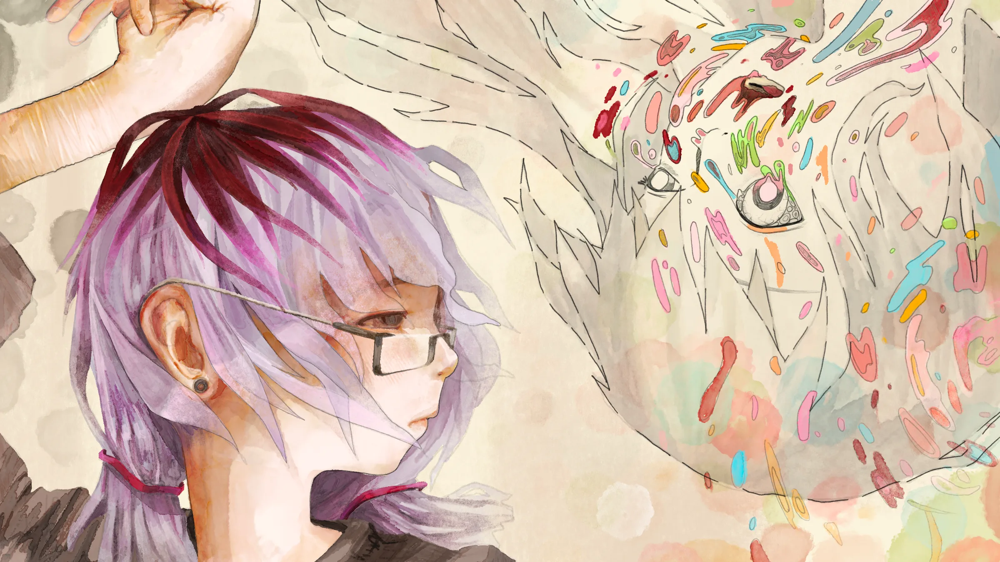
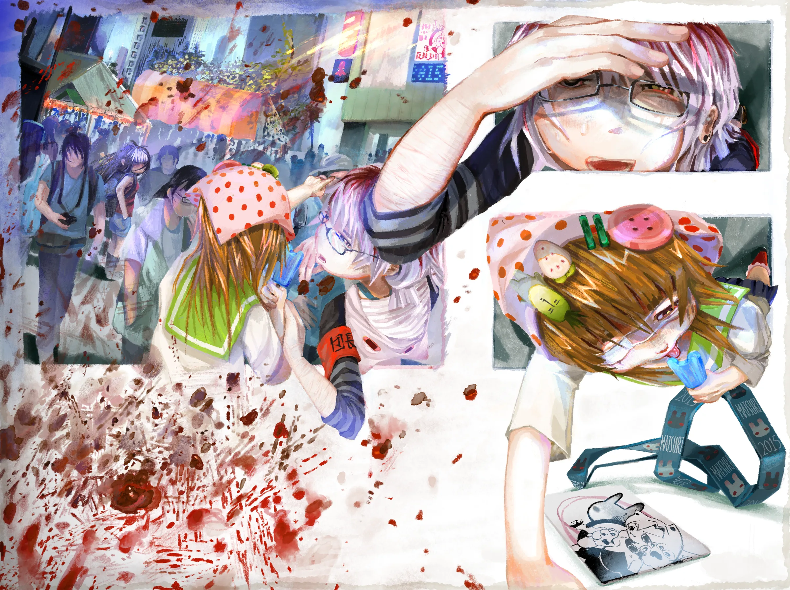
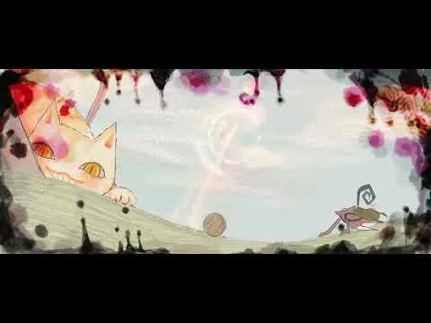
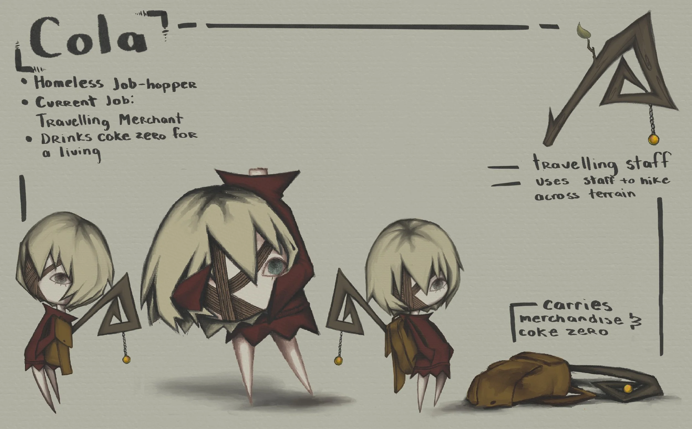
One song.
One typeface.
Twenty-four spreads.
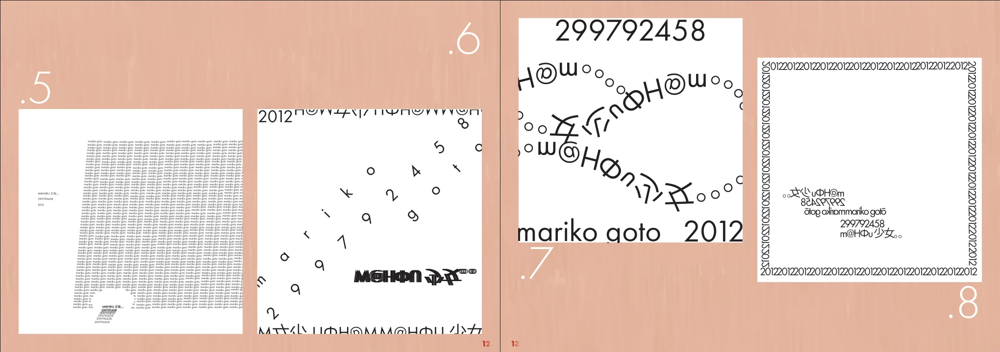
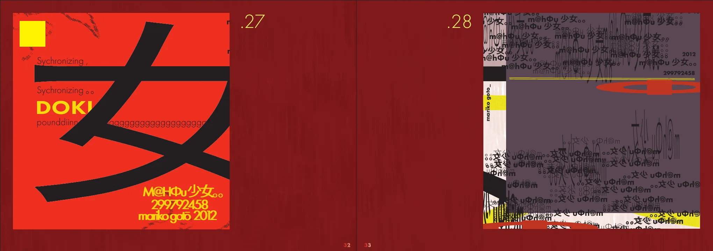
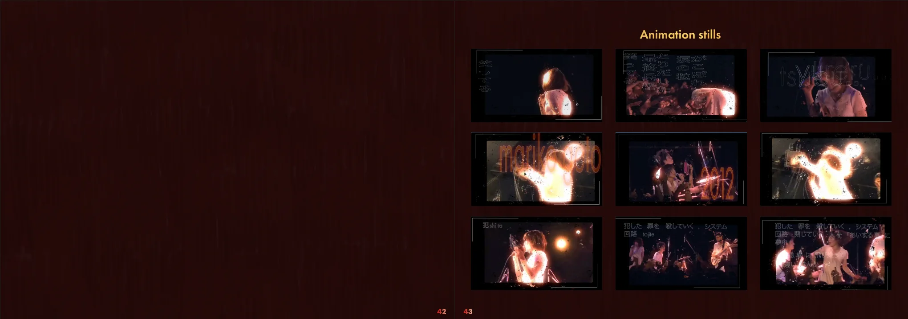
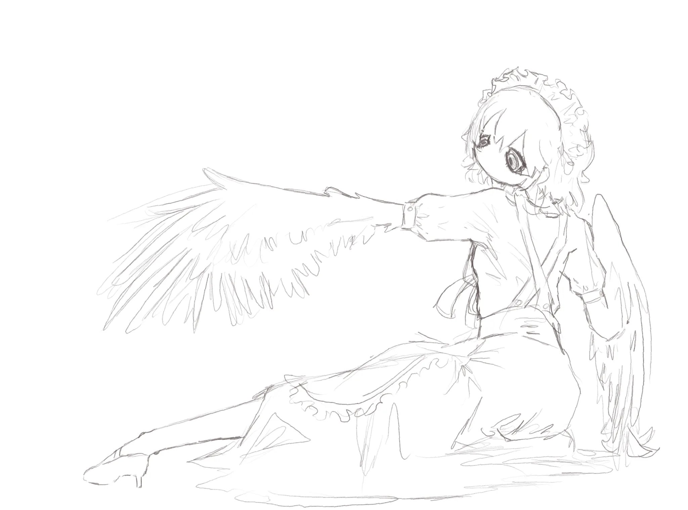
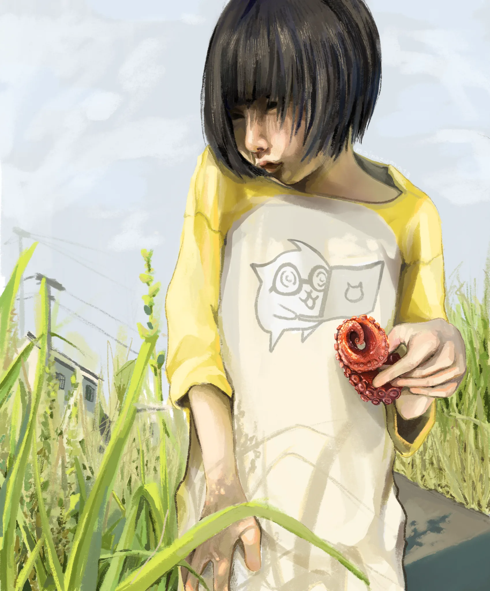
Four full-height chapters, snapped one to the next. Plates run horizontally inside each.
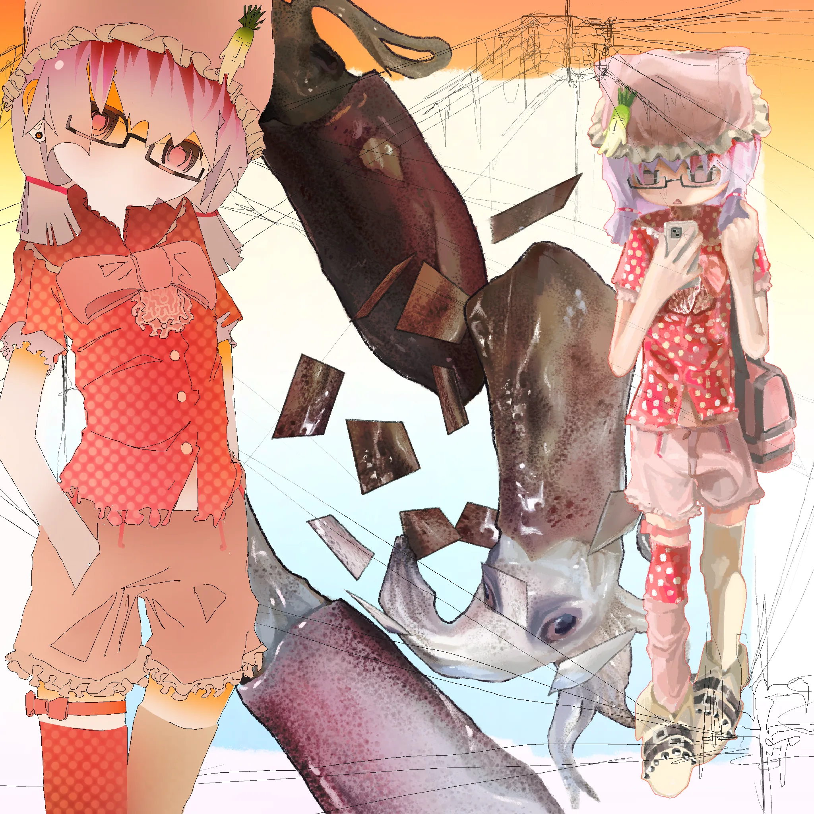
One song.
One typeface.
Chapter names set rotated in the outer margin, like type printed on a book's fore-edge.
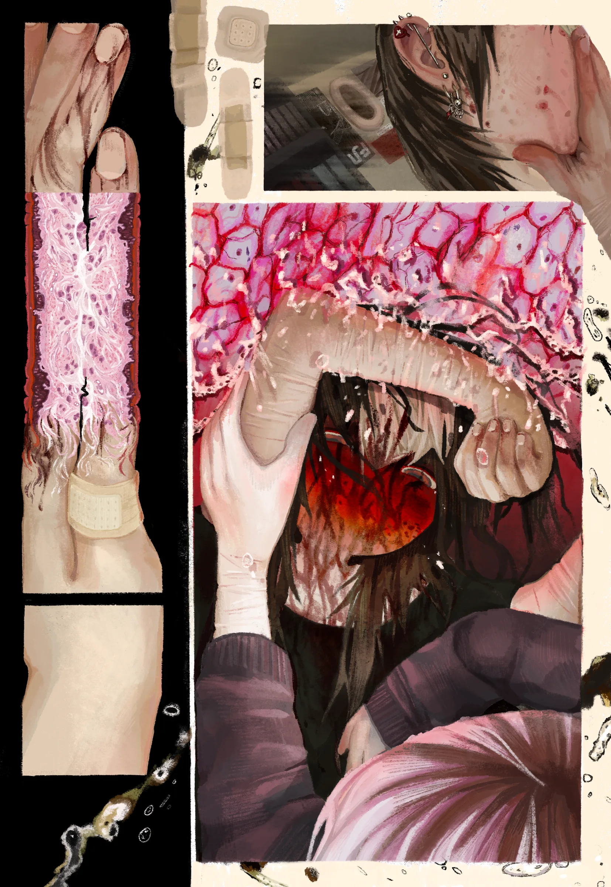
One song. One typeface.
Every piece as a small plate on one sheet that never leaves. The sheet is the map.
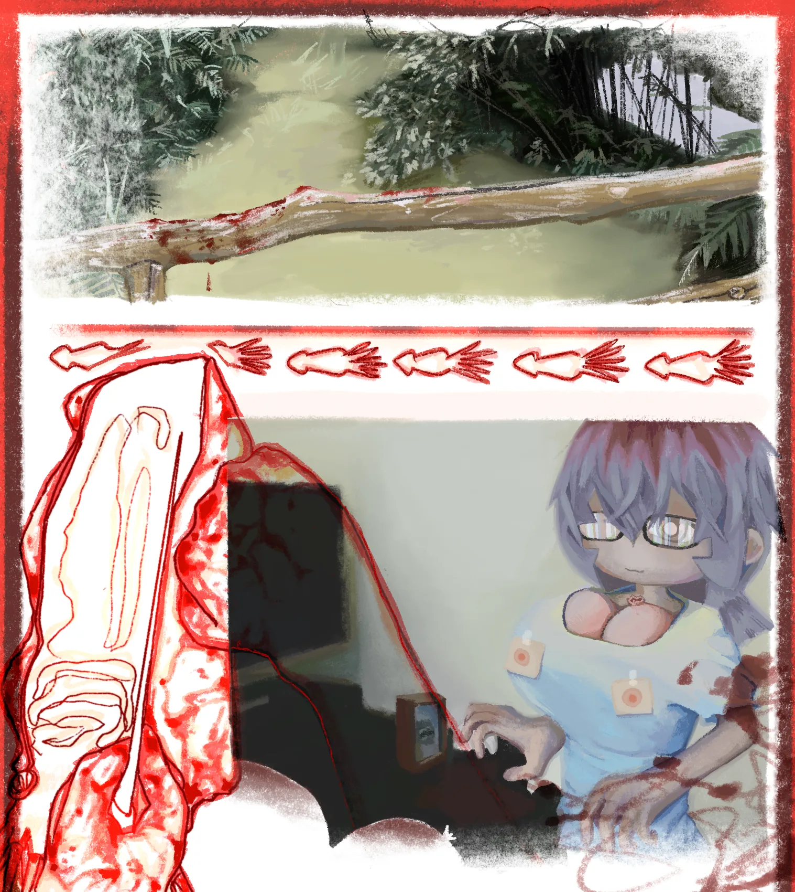
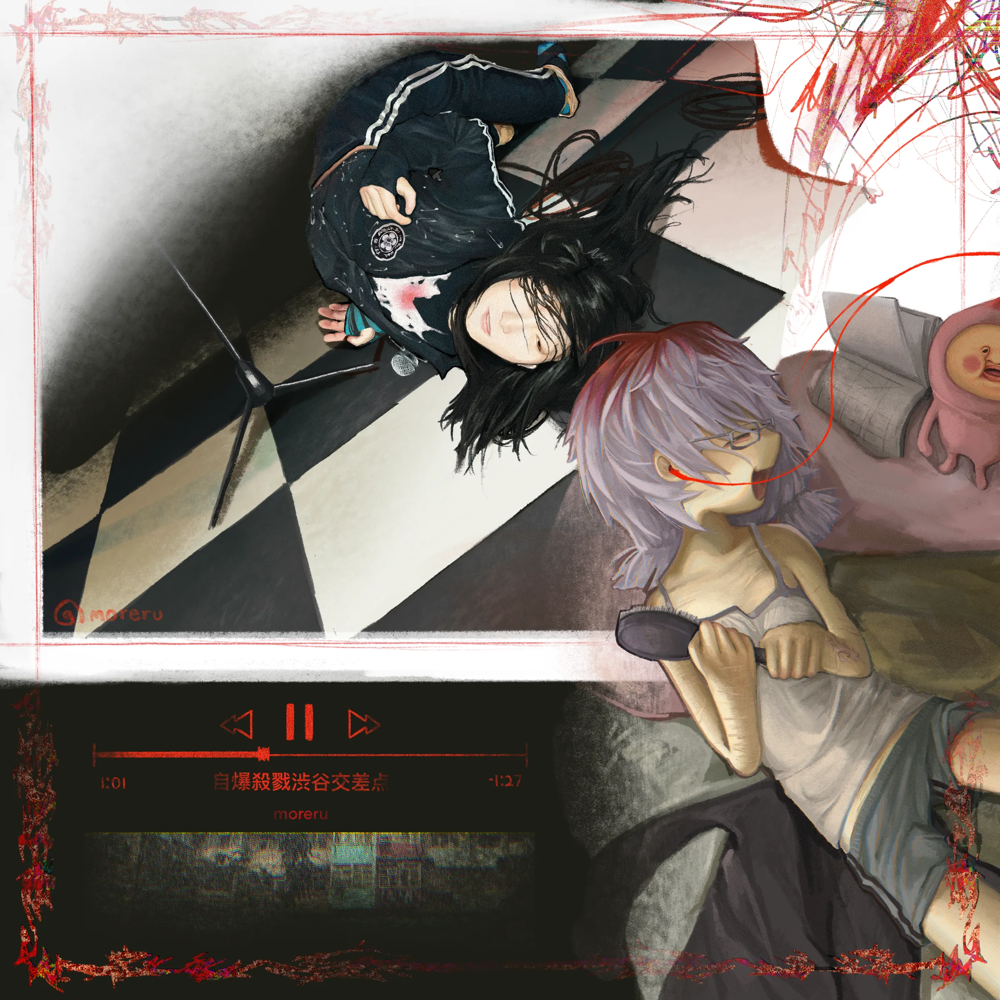
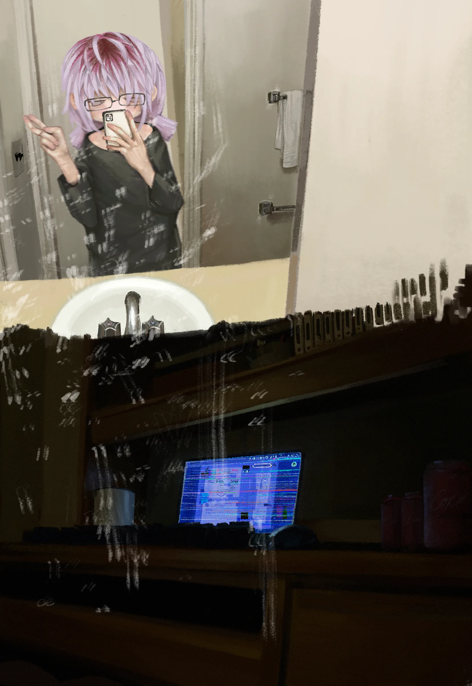
One song. One typeface.
Anatomy-atlas convention: plates carry numbers, a fixed legend tells you what each is.
One song. One typeface.
Four bands, one open at a time, so all four headings are always on screen.
One song. One typeface.
No fixture. The contents reprints at every chapter boundary, on a capillary that deepens as you descend.
One song.
One typeface.
Twenty-four spreads.